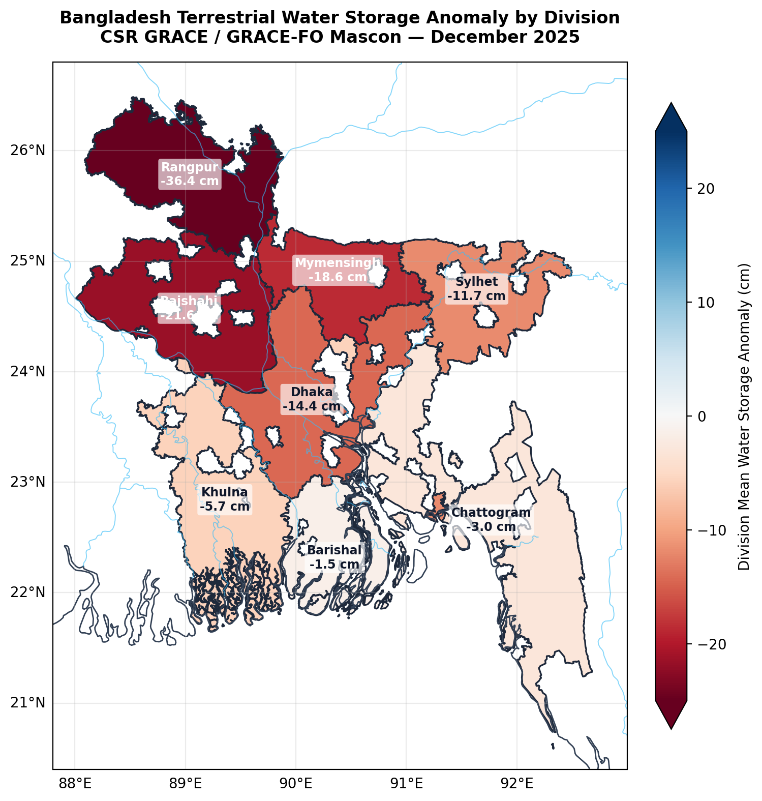
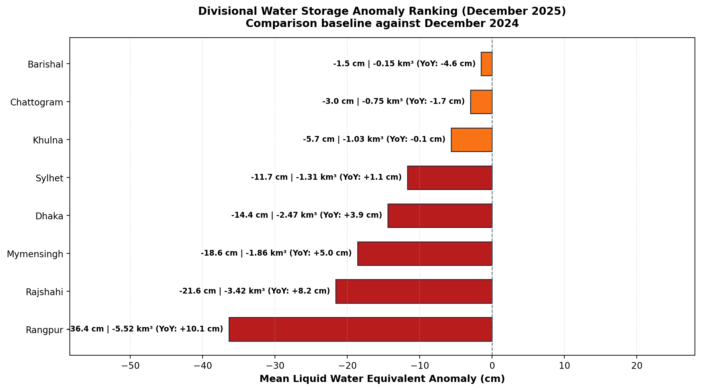

| Division | Land Area | Mean LWE Anomaly | Range [Min, Max] | Net Volume Anomaly | YoY Change (December 2024) | Condition |
|---|---|---|---|---|---|---|
| Rangpur | 15,168.1 km² | -36.37 cm | [-46.9, -23.2] | -5.517 km³ | +10.06 cm | Severe Deficit |
| Rajshahi | 15,816.3 km² | -21.61 cm | [-34.6, -12.2] | -3.418 km³ | +8.18 cm | Severe Deficit |
| Mymensingh | 10,001.8 km² | -18.60 cm | [-23.2, -13.2] | -1.860 km³ | +5.04 cm | Severe Deficit |
| Dhaka | 17,130.7 km² | -14.41 cm | [-23.2, -6.7] | -2.469 km³ | +3.89 cm | Moderate Deficit |
| Sylhet | 11,196.6 km² | -11.72 cm | [-18.9, -8.7] | -1.313 km³ | +1.05 cm | Moderate Deficit |
| Khulna | 18,265.6 km² | -5.67 cm | [-11.1, +5.0] | -1.035 km³ | -0.11 cm | Moderate Deficit |
| Chattogram | 24,886.5 km² | -3.01 cm | [-13.2, +7.2] | -0.749 km³ | -1.66 cm | Normal / Balanced |
| Barishal | 9,887.4 km² | -1.52 cm | [-6.7, +6.6] | -0.151 km³ | -4.62 cm | Normal / Balanced |